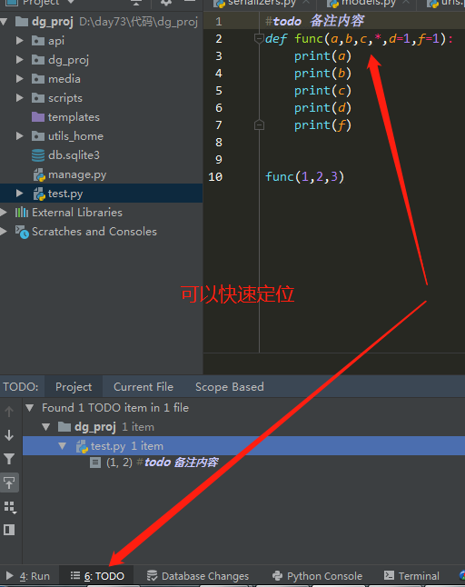

这个注释用来快熟找到内容
#todo这里的todo不用区分大小写
写法标记的位置,#todo 备注内容

a = 1 #type:list
#如果我们对a加了#type:list,解释器会把他当成列表的形式
a.append() #这里我们.的时候会自动跳出list的内置方法
#只是个例子别深究哈
#如果多个值
x,y = 1,2 #type:str 两个都是字符串
#如果两个不同类型
x,y = 1,2 #type:str,int
#如果在类或者函数中
#写法1
def func(a:str,b:int)
#写法2
def func(a,b)
"""
:param str a:
:param int b:
:return:
"""